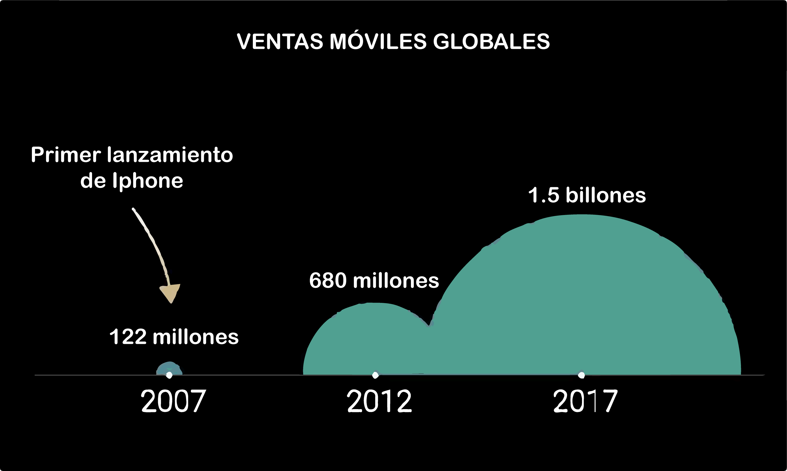

La humanidad en la actual era digital ha incorporado y aceptado universalmente al smartphone como parte esencial de nuestra vida diaria, el uso masivo se ha centrado especialmente en la población adulta joven; a quienes es frecuente observarlos dándole uso absorto mientras desarrollan sus actividades cotidianas.
Los primeros estudios datan del año 2008 gracias a las investigaciones realizadas por Fishman, quiropráctico estadounidense quien añadió el término “Text-Neck” para describir una lesión por estrés repetitivo y dolor sostenido debido a la posición reclinada del cuello durante el uso excesivo de teléfonos inteligentes o smarthphone, tablets y laptops.
En la actualidad el Síndrome de Text-Neck tiene una prevalencia de 86,9% en población infantil y adolescente, en su mayoría mujeres; asimismo, se ha descrito que el 35% de la población escuchó en algún momento de su vida sobre esta patología mientras que solo el 8% de ellos tiene conocimiento sobre esta.
El Síndrome de Text-Neck se manifiesta como, dolor cervical asociado a tensión (71,2%), cefalea (63,3%), irritabilidad (54,5%) y ansiedad (50,7%)(5,6). Además, manifestaciones oculares como astenopia, xeroftalmia y miopía (21%); efectos psicológicos como irritabilidad, estrés, ansiedad y depresión (82%) (4). La cronicidad de esta patología conlleva a desgarros musculares y degeneración osteomuscular a nivel cervical, la cual en sus formas severas puede requerir de cirugías como discectomía anterior y artroplastia.